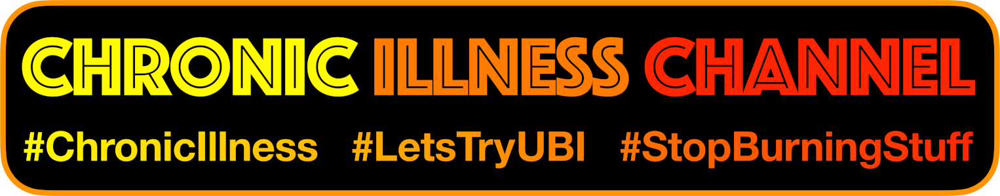

UK-AQ
Live and historical air quality data from multiple sensor networks in the UK.

Data Explorer
Explore emissions data from the UK’s National Atmospheric Emissions Inventory.

Live and historical air quality data from multiple sensor networks in the UK.
Explore emissions data from the UK’s National Atmospheric Emissions Inventory.